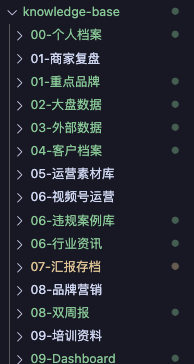
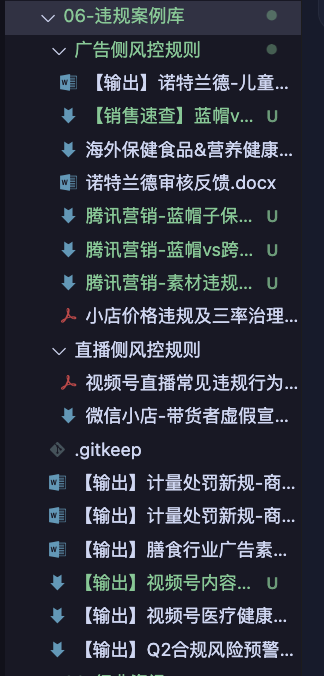
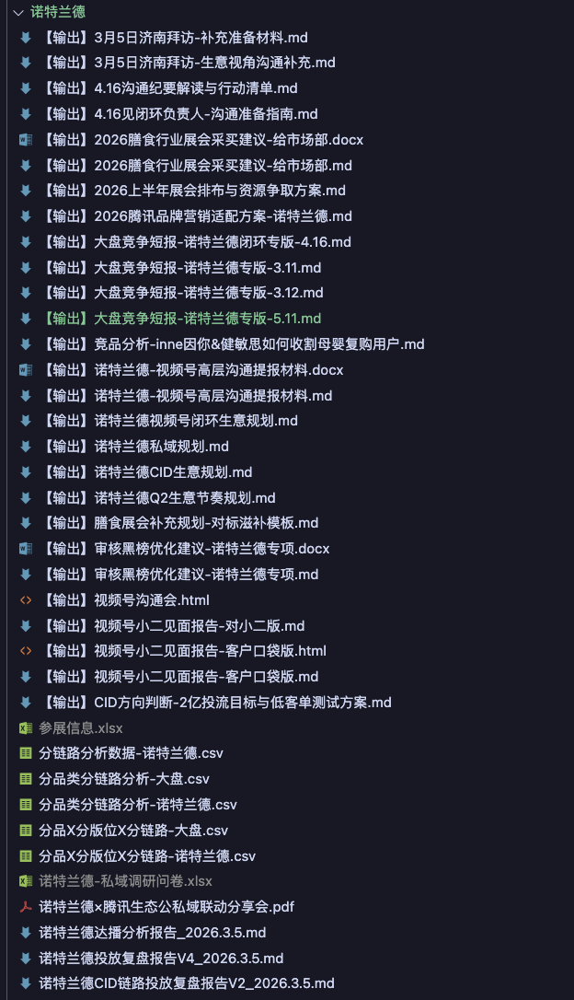

01
我的工作台 · 八个角色
不是八个工具 —— 是八个各司其职、互相协同的角色，
每一个都记得我同一份 OKR、同一批客户、同一条红线。
🧠
我
carmennwu · 大脑
本场展开
🤝
生意合伙人
站客户那边 · 谋生意
本场展开
🎯
生意军师
站我这边 · 冲 OKR
本场展开
🛡️
生意守门人
站长期那边 · 守底线
🔍
市场洞察
看行业风往哪吹
💡
汇报参谋
把仗复盘成打法
🔗
资源协调
大促/政策/扶持对齐
🕊️
话术参谋
把话说对说稳
🎨
品牌共建师
陪客户慢慢做品牌
↑ 大脑是我，外面两圈是 8 个 AI 角色 —— 大脑指挥它们协同打仗，不是它们替我思考
工程证据
不是 PPT 画的，是真实跑着的工作台
所有截图都是我电脑里真实的文件夹，可以现场打开核验。
01
8 个 AI 同事，建制完整
不是 PPT 画的，是真的 8 个 agent 文件夹

02
9 大类目，产出在跑
每天都在动，不是花架子

↓ 三个角色，三张硬证据
情报员
AI 帮我盯 6 大维度的外部情报
技术趋势 / 竞品 / 市场 / 投融资 / 消费者 / 行业报告

合规官
AI 帮我盯死合规雷区，主动产出风险预警
广告侧 + 直播侧双线守门

生产线
单客户 30+ 产出物，全类型覆盖
会议纪要 / 行业研究 / 竞品 / 链路诊断 / 联名分析
